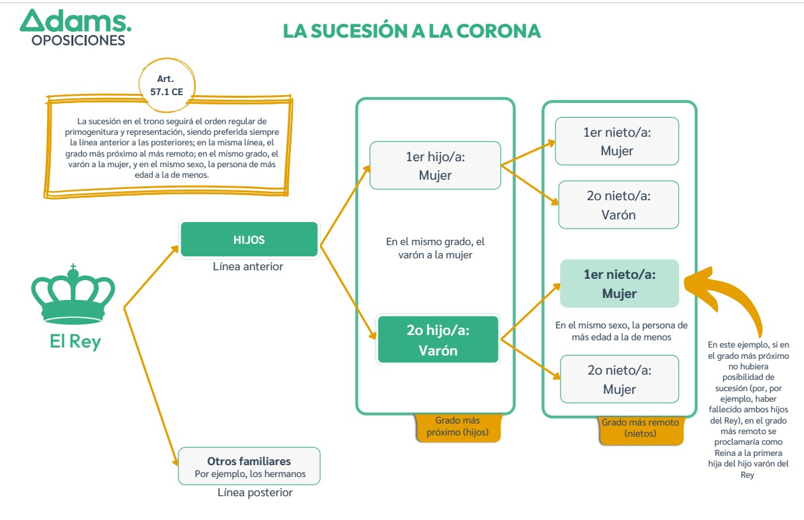

Esquema de Preguntas de Desarrollo
Anexo: Esquema Sucesión de la Corona
Tal como solicitaste, aquí se ha preparado el espacio para incluir el segundo documento como una imagen literal sin interpretaciones.
Guarda el archivo PDF secundario como una imagen (por ejemplo, Tema_02_DC_Corona_sucesion.jpg) en la misma carpeta que este archivo HTML, y se visualizará a continuación. Por defecto muestra un espacio reservado.
